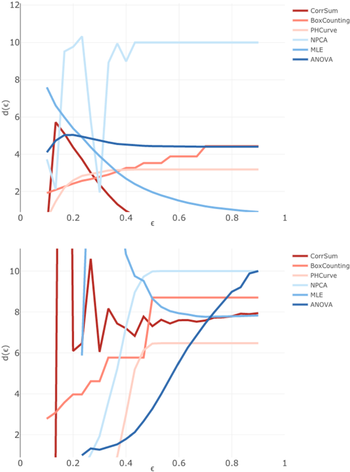
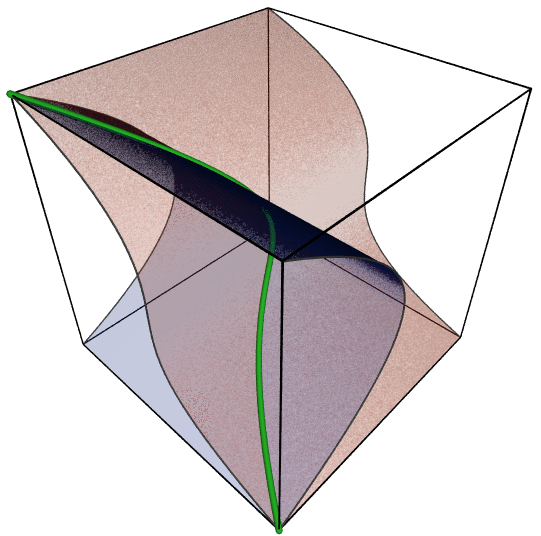
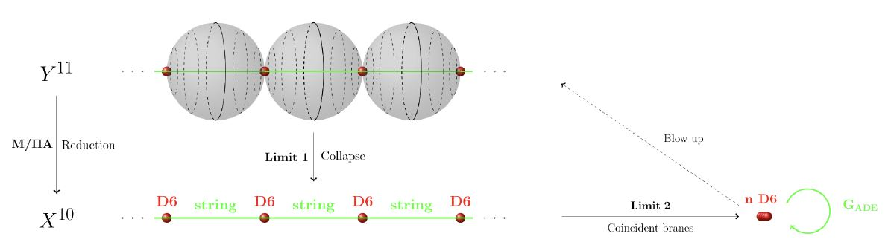
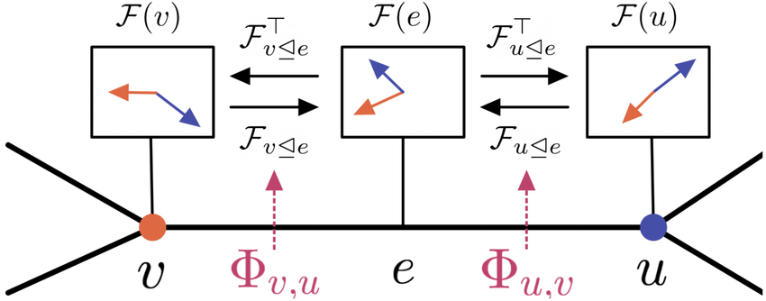
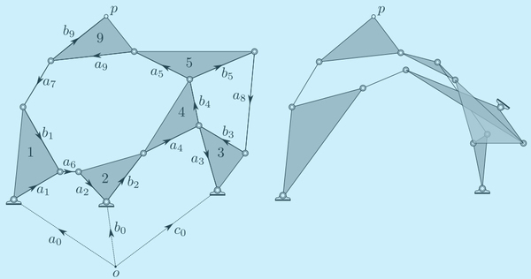

What is Algebraic Geometry?
Algebraic geometry is the study of geometric structures that arise from solutions to systems of polynomial equations. These structures, known as algebraic varieties, are deeply connected to both algebra and geometry, creating a bridge between these two powerful areas of mathematics.
Initially developed in the 19th century, algebraic geometry has evolved into a major branch of mathematics with wide-reaching applications, particularly in physics, number theory, and even computer science. Its principles play a vital role in modern cryptography, string theory, and complex systems analysis.
Key Concepts in Algebraic Geometry
Algebraic Varieties
An algebraic variety is a geometric object defined by polynomial equations. The solutions to these equations form the variety, which can be a curve, surface, or more complex structure. Algebraic varieties are the cornerstone of algebraic geometry, and their study provides deep insights into both geometric and algebraic properties.
Types of Varieties: Affine Varieties, Projective Varieties, Singular Varieties, Smooth Varieties
Singularities
A singularity occurs at a point on a variety where the object fails to behave like a smooth surface (i.e., the tangent plane does not exist). Studying singularities helps mathematicians understand the behavior of varieties at these special points, which is essential for many applications, including in string theory and physics.
Types of Singularities: Nodes, Cusps, and Higher-Order Singularities
Sheaf Theory and Cohomology
Sheaf theory is a tool in algebraic geometry that allows mathematicians to study global properties of varieties by considering local information. The concept of cohomology, derived from topology, is used to analyze the global structure of varieties, providing crucial insights into their topological and geometric properties.
Applications: Sheaf cohomology is used to classify algebraic varieties, understand their deformation theory, and in the study of moduli spaces.
Computational Algebraic Geometry
Computational algebraic geometry uses algorithms and computer software to study algebraic varieties. These techniques allow mathematicians and scientists to visualize complex varieties, solve systems of polynomial equations, and explore their properties computationally.
Tools and Methods: Gröbner bases, polynomial interpolation, and numerical methods for finding solutions to systems of polynomial equations.
A Deeper Look: The Role of Algebraic Geometry in Other Fields
Algebraic geometry has profound applications in several areas of modern science and technology, particularly in the following fields:
- Physics: In string theory, algebraic geometry provides the framework for understanding the geometry of the strings and branes that form the basis of the theory. Concepts such as Calabi-Yau manifolds, which are complex algebraic varieties, play a crucial role in compactification theories.
- Number Theory: Algebraic geometry is used extensively in number theory, particularly in the study of elliptic curves and modular forms. The study of rational points on algebraic varieties is a central theme in modern number theory.
- Cryptography: Algebraic geometry underpins several cryptographic methods, particularly in the construction of public-key encryption systems such as elliptic curve cryptography (ECC), which relies on the properties of elliptic curves defined over finite fields.
- Computer Science: In computer science, algebraic geometry is used in areas such as error-correcting codes, optimization, and machine learning, where systems of polynomial equations arise in problems like clustering and classification.
Recent Advances and Research in Algebraic Geometry
Recent advances in algebraic geometry have led to new breakthroughs in various areas of mathematics. Key areas of ongoing research include:
- Moduli Spaces: These spaces parameterize families of algebraic objects, such as varieties or curves, and are essential in understanding how varieties change under deformations.
- Mirror Symmetry: Mirror symmetry, a concept in string theory, is closely tied to algebraic geometry and involves studying pairs of Calabi-Yau manifolds that have dual geometric properties.
- Derived Categories: Derived categories are used in modern algebraic geometry to study complexes of sheaves and provide new tools for understanding the structure of varieties and their moduli spaces.
- Homological Algebra: Homological methods, such as persistent homology, are being used to study the topological properties of algebraic varieties, with applications in fields like data analysis and machine learning.
Contact and Collaboration
If you're a researcher or student interested in learning more about algebraic geometry or would like to collaborate on projects, please reach out! We're always looking for new ideas and perspectives to further the field.
Email us at research@mathworld.com for more information.